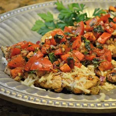

Chicken Bruschetta

The Best Chicken Bruschetta Recipe the world has yet to experience!
I love how much flavor comes from the simple ingredients
in this chicken bruschetta recipe.
It’s easy, flavorful, and this dish is totally worthy of serving up to guests…it’s just that good!
- 4 (5 ounce) boneless skinless chicken breasts
- ¼ cup Mazola® Corn Oil
- 2 tablespoons balsamic vinegar
- 2 garlic cloves, finely minced
- 1 tablespoon Spice Islands® Italian Herb Seasoning
- ½ teaspoon Spice Islands® Fine Grind Sea Salt
- ¼ teaspoon Spice Islands® Fine Grind Black Pepper
- 2 cups diced plum tomatoes
- ¼ cup diced red onion
- ½ cup shredded Italian blend cheese
- ¼ cup finely chopped fresh basil
Steps
- Place chicken breasts in a large resealable plastic freezer bag,
one at a time. Lightly pound chicken breasts to an even thickness of about 3/4-inch.
Combine oil, balsamic vinegar, garlic, Italian herb seasoning,
salt and pepper in a small bowl and whisk until combined. Pour half of
the marinade over the chicken, reseal bag, and set aside to marinate
for at least 15 minutes. (Chicken and marinade can be prepared ahead;
covered and refrigerated overnight.)
- Preheat grill to medium heat or about 350 degrees F.
Combine remaining marinade with diced tomatoes and red onion;
set aside. Transfer chicken from marinade onto grill surface and discard marinade.
Grill chicken for 4 to 6 minutes per side or until cooked through.
Transfer the chicken to a serving plate and sprinkle with shredded cheese.
Spoon bruschetta mixture over chicken and top with basil; serve immediately.